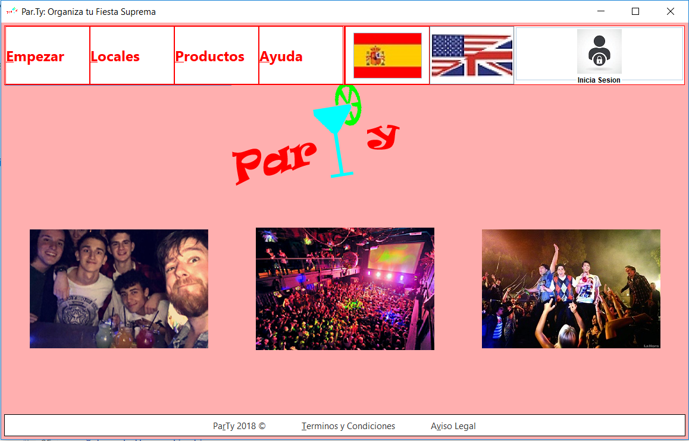
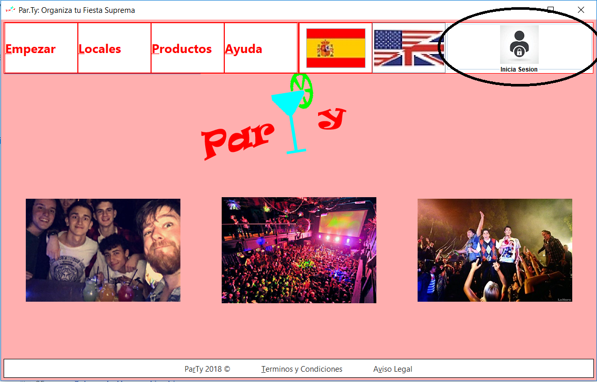

Iniciar Sesion
Para iniciar sesion se debe seguir los siguientes pasos:
- Ir a la pagina principal o lobby

- Hacer click en la parte superior derecha en el icono de registro

- Si ya tiene cuenta en la aplicacion debe introducir su usuario y contraseña correctamente y clickar en "INICIAR SESION"

- En caso de que no la tenga debe hacer click en "Registrese" e introducir sus datos para crear una cuenta